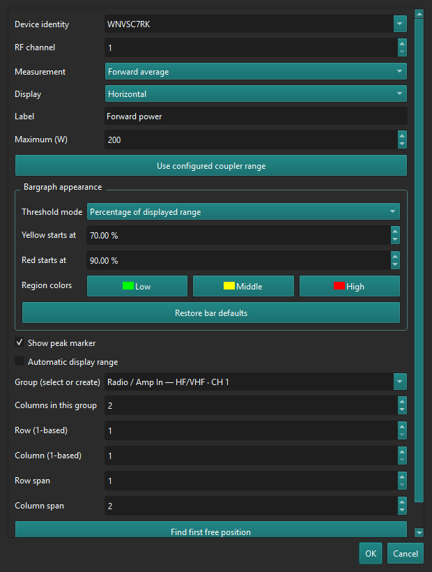
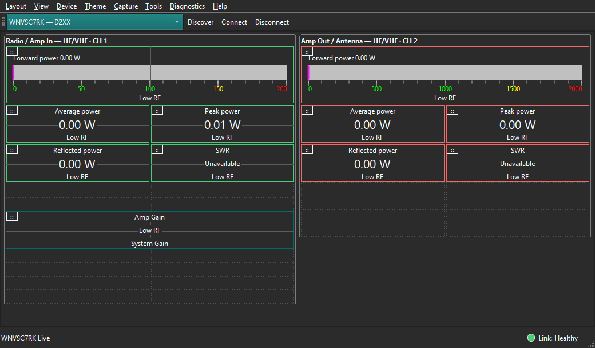
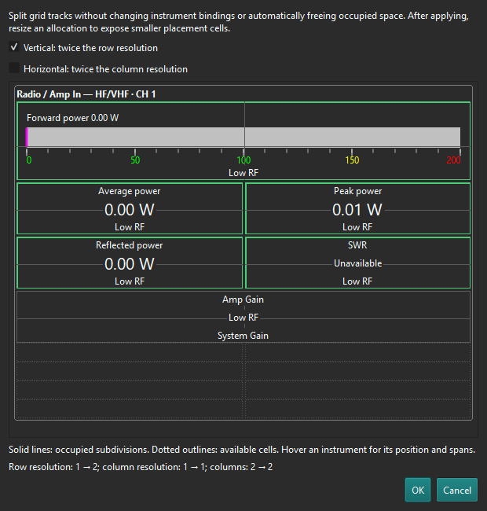
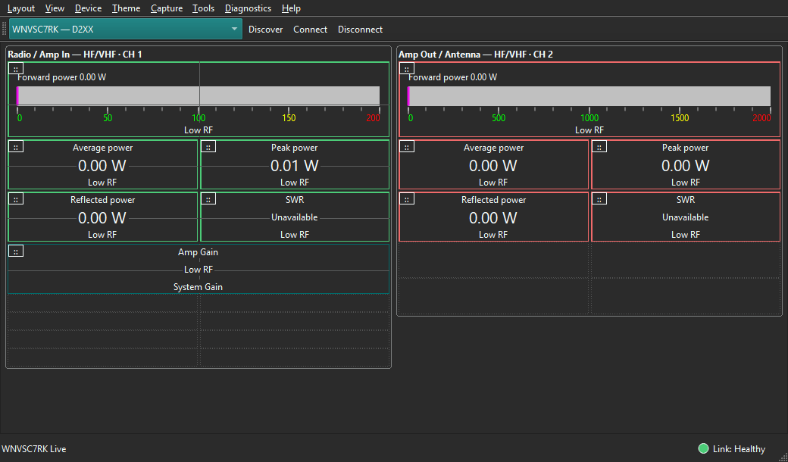
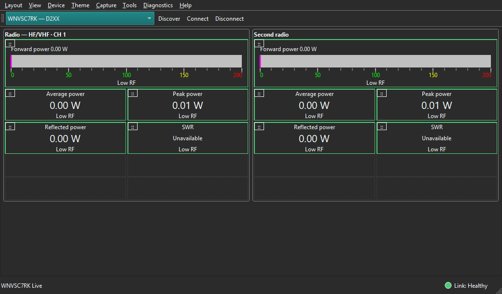

Layout Edit Mode: arranging your station
On this page
- Before you begin
- 1. Enter Edit Layout
- 2. Understand the grid
- 3. Add an instrument
- 4. Move a meter
- 5. Resize a meter
- 6. Undo and Redo
- 7. Use a finer grid
- 8. Copy an instrument or an entire group
- 9. Return to normal operation
- Common questions
Before you begin
Open a layout close to the arrangement you want. Choose Layout → Save Layout As and give your practice copy a new name. Keep the original if you want an easy way back. The examples below use a connected WN-2 with RF idle. You can arrange a layout without transmitting. The instrument positions remain the same when readings change.
1. Enter Edit Layout
Choose Layout → Edit Layout, or press Ctrl+E. Movement and resize handles appear around instruments. This mode is for arranging the display; return to normal mode when you want to operate instrument controls.
Edit Layout exposes handles and grid guides. Select image to enlarge.

2. Understand the grid
Right-click an instrument and choose Properties. In Edit Layout, the window includes Group, Columns in this group, Row, Column, Row span and Column span. Row 1 and Column 1 are the upper-left position inside the group. A span tells you how many cells the instrument occupies. For example, Column span 2 stretches an instrument across two columns. Row span 2 makes it occupy two rows.

Geometry controls appear in Properties while Edit Layout is enabled. Select image to enlarge.

A blank-looking area may still be part of a tall instrument. Two instruments cannot occupy the same cell. Hover over the grid or inspect Properties when a position appears unavailable.
3. Add an instrument
Choose Layout → Add instrument, or right-click an empty grid position. Select Device identity, then the required Measurement and its channel or input. Choose a Display style and a useful Label. Select the destination Group, position and spans. Find first free position proposes a location that does not overlap another instrument. Check it, then press OK. For a new group, type a new group name in the Group field. Choose its number of columns. You can rename the group later. See Adding a cross-needle meter for a complete example and Instrument choices for other styles.
4. Move a meter
Drag its movement handle to a free position, then release. For an exact position, change Row and Column in Properties. Press Escape to cancel a move that is still in progress.

Moving a meter can deliberately leave space for another instrument. Select image to enlarge.

If moving into another group, check that group's available cells and grid spacing. A different group name does not select a different WN-2; change Device identity separately if needed.
5. Resize a meter
Use the edge or corner resize handles to change its width, height or both. You can also enter Row span and Column span in Properties. Increase the width for long labels or more readable scales; increase the height for vertical bars and analog faces. Meters keep a minimum readable size. Another instrument sharing a row can also affect that row's height. A grid span is a layout allocation, not a fixed number of screen pixels.
6. Undo and Redo
Choose Layout → Undo after an unwanted move, size change or property edit. Redo restores the edit. These commands apply to the layout, not to relay actions or recorded measurements.

Undo returns to the preceding arrangement. Select image to enlarge.
7. Use a finer grid
Right-click the group heading and select Refine Group Grid. Check Vertical, Horizontal or both to divide existing grid tracks into smaller parts. Examine the preview before pressing OK.

The preview explains which areas are occupied and how the grid will change. Select image to enlarge.

Refinement preserves the space already occupied by each instrument. It does not automatically create an empty cell. After refining, shrink an instrument by one of the smaller tracks to make room for another.

A refined group allows more precise arrangements. Select image to enlarge.

Each direction can be refined once. If a small instrument will not fit when moved to a different group, compare their grid refinement settings. Undo can reverse refinement.
8. Copy an instrument or an entire group
Right-click an instrument and choose Duplicate to make another with the same properties. Place the copy, then change its label, channel or device as required. For a matching station section, use Layout → Duplicate Group, or right-click the group heading and choose Duplicate group. Give the copy a unique name. This preserves the original group's sizes, positions and grid spacing, so you do not have to reconstruct it instrument by instrument.

Duplicate Group preserves the arrangement. Reassign copied instruments if they should read another WN-2. Select image to enlarge.

The copied meters initially read the same sources. Open their Properties to change Device identity or channel. Connect another WN-2 separately before expecting its readings. One Undo removes the group copy.
9. Return to normal operation
Turn Edit Layout off. The handles disappear. Right-click Properties remains available for ordinary source and appearance settings, but the geometry controls are hidden to prevent accidental rearrangement.

Normal-mode Properties keeps measurement and display choices available. Select image to enlarge.
Check the readings and labels, save the layout, and reopen it if you want to confirm the saved arrangement.
Common questions
- Why will a meter not fit in apparently empty space? A spanning instrument may already own those cells. Inspect its row and column spans.
- Why do two groups look different? Compare columns, row/column spans and refinement. Duplicate Group is the easiest way to start with identical arrangements.
- Why is a copied meter disconnected? Its Device identity may still refer to the original WN-2. A group name does not establish a connection.
- Where did my meter go? Check View visibility options and any detached meter windows.
- Can I make a layout for another activity? Yes. Save As under a new name and customize that copy.
Help home · RF StateSide · RayWn2App operator guide